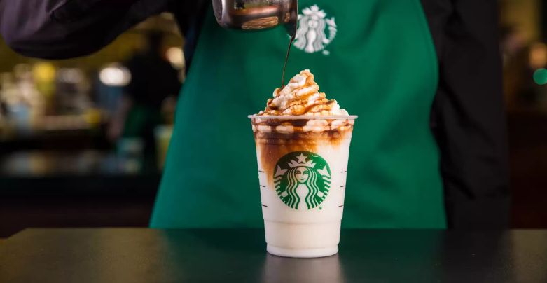

Mateo Paez
I am a results-driven and highly skilled professional with a proven track record in accounting. With 1 year of experience, I have consistently delivered exceptional results. My commitment to excellence, adaptability, and passion for tasks make me a valuable asset to any organization. My journey in Accounting began 1 year ago, and I have since navigated a dynamic landscape, accumulating invaluable experience and knowledge along the way. Throughout my career, I have been dedicated to pushing the boundaries of what's possible and achieving outcomes that exceed expectations. My journey reflects a deep commitment to personal and professional growth, as well as an unwavering dedication to contributing to the success of the organizations I've had the privilege to work for.
Throughout my career, I have consistently demonstrated a keen ability to adapt to what is given to me, that has translated into measurable, positive impacts for my employers. I take pride in my capacity to problem solve, which has allowed me to contribute to the success of various projects and teams.
In addition to my technical skills, I possess a strong aptitude for leadership that enhances my ability to work well in diverse, cross-functional teams. My adaptability enables me to thrive in dynamic and fast-paced environments, making me an invaluable asset in situations that demand quick thinking and problem-solving.
One of my most significant accomplishments was being an accountant for an MLS team at age 16. This MLS soccer team went by the name of the "Portalnd Timbers & Thorns". This project not only improved the efficiency of the company, but it also showcased my ability to manage time in an efficient matter. Alongside these successes, it showcased the professional world and what it has to offer. This success, along with my consistent performance in previous roles, has instilled in me a commitment to excellence and a drive to continuously push the boundaries of what can be achieved.
I am passionate about working with new teams, and am dedicated to staying at the forefront of industry trends and best practices. This commitment to lifelong learning has allowed me to remain adaptable and innovative, ensuring I can bring fresh insights and strategies to any organization I work for.
In summary, I am a highly motivated and results-oriented professional with a strong track record of success in accounting. My diverse skill set, combined with my ability to adapt and thrive in challenging environments, makes me an ideal candidate for any type of team. I am excited to continue my journey, contributing to the success of forward-thinking organizations and helping them achieve their goals. My dedication to personal and professional growth, as well as my unwavering commitment to excellence, is the driving force behind my career. I am not just a passive observer of the rapidly changing landscape of accounting; I am an active participant, continuously seeking opportunities to innovate, excel, and exceed expectations. I am confident that with my experience and passion, I can be a transformative force in any organization, helping them achieve new heights of success.
Experience
Homecare Assistant
• Organize and maintain documents & spaces
• Move large household items
• House-sit, as needed
Barista
• Quality control with various beverages
• "Flexing"/filling multiple roles
• Create a welcoming space for customers
Paid Intern - Accounting
• Assist with accounts payable
• Assist in processing expense reports for staff
• Assist with balance sheet reconciliations and month end close process
• Take on special projects as directed
• Help with clerical work, such as filing and data entry
• Provide reception and logistics coverage, which will include assisting the administrative assistant, answering phone calls and greeting guests.
Education
UC Riverside
Portfolio
